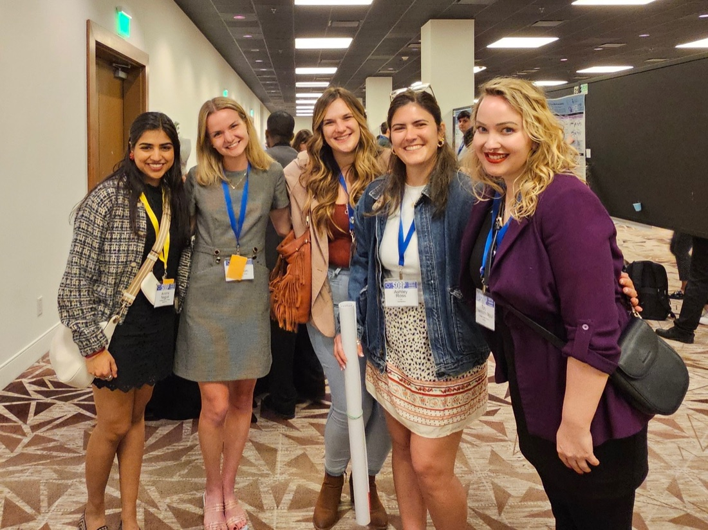

University of Chicago · Department of Psychiatry & Behavioral Neuroscience
Hormone sensitivity is an unusually strong brain response to ordinary hormone shifts, and it can drive severe depression, irritability, suicide risk, and harmful substance use. We measure and manipulate the menstrual cycle to identify and treat these sensitivities.

From mechanism to treatment
Oncology transformed care by targeting molecular sensitivities like ER or HER2. Hormone shifts across the cycle are universal, but people differ in which shifts their brains react to. Our DASH-MC framework characterizes those sensitivities so treatment can target the mechanism rather than the label.
Those hormonal windows land on different days in every person, so calendar counting blurs them. Our open-source package menstrualcycleR anchors each cycle to ovulation and menses, lining up the same hormonal events across people and months. We use that continuous framework to build person-specific cycle diagnostics.

We isolate causes with randomized crossover trials that manipulate one hormone shift at a time. In cycling patients with recent suicidal ideation, buffering the perimenstrual drop reduced the perimenstrual rise in suicidal ideation and depressed mood, and withdrawing it again brought the symptoms back.
How much this helps, and for whom, is what we are working on now. The framework above predicts it will not be the same for everyone.


We have just moved to the University of Chicago, and the full site is still being built.
We are not recruiting participants through this page. Our trials enrol through clinical referral and study-specific screening, and registered trials are listed on ClinicalTrials.gov.